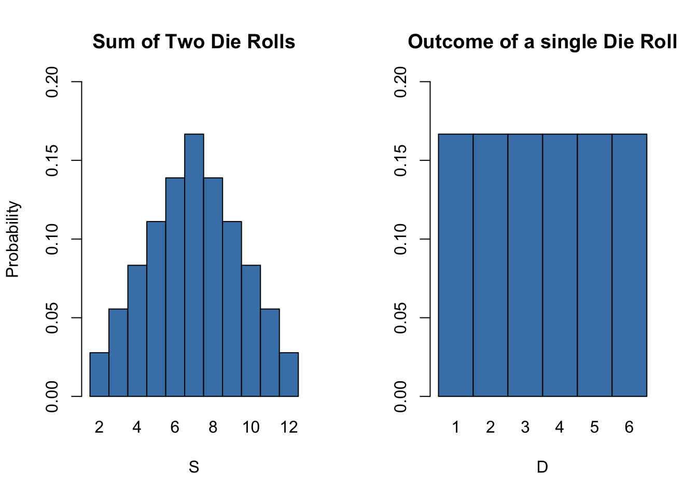

2.3 Random Sampling and the Distribution of Sample Averages
To clarify the basic idea of random sampling, let us jump back to the die rolling example:
Suppose we are rolling the dice \(n\) times. This means we are interested in the outcomes of \(n\) random processes \(Y_i, \ i=1,...,n\) which are characterized by the same distribution. Since these outcomes are selected randomly, they are random variables themselves and their realisations will differ each time we draw a sample, i.e. each time we roll the dice \(n\) times. Furthermore, each observation is randomly drawn from the same population, that is the numbers from \(1\) to \(6\), and their individual distribution is the same. Hence we say that \(Y_1,\dots,Y_n\) are identically distributed.
Moreover, we know that the value of any of the \(Y_i\) does not provide any information on the remainder of the sample. In our example, rolling a six as the first observation in our sample does not alter the distributions of \(Y_2,\dots,Y_n\): all numbers are equally likely to occur. This means that all \(Y_i\) are also independently distributed. Thus, we say that \(Y_1,\dots,Y_n\) are independently and identically distributed (i.i.d). The dice example is the simplest sampling scheme used in statistics. That is why it is called simple random sampling. This concept is condensed in Key Concept 2.5.
Key Concept 2.5
Simple Random Sampling and i.i.d. Random Variables
In simple random sampling, \(n\) objects are drawn at random from a population. Each object is equally likely to end up in the sample. We denote the value of the random variable \(Y\) for the \(i^{th}\) randomly drawn object as \(Y_i\). Since all objects are equally likely to be drawn and the distribution of \(Y_i\) is the same for all \(i\), the \(Y_i, \dots, Y_n\) are independently and identically distributed (i.i.d.). This means the distribution of \(Y_i\) is the same for all \(i=1,\dots,n\) and \(Y_1\) is distributed independently of \(Y_2, \dots, Y_n\) \(Y_2\) is distributed independently of \(Y_1, Y_3, \dots, Y_n\) and so forth.
What happens if we consider functions of the sample data? Consider the example of rolling a dice two times in a row once again. A sample now consists of two independent random draws from the set \(\{1,2,3,4,5,6\}\). In view of the aforementioned, it is apparent that any function of these two random variables is also random, e.g. their sum. Convince Yourself by executing the code below several times.
sum(sample(1:6, 2, replace = T))## [1] 6Clearly this sum, let us call it \(S\), is a random variable as it depends on randomly drawn summands. For this example, we can completely enumerate all outcomes and hence write down the theoretical probability distribution of our function of the sample data, \(S\):
We face \(6^2=36\) possible pairs. Those pairs are
\[\begin{align} &(1,1) (1,2) (1,3) (1,4) (1,5) (1,6) \\ &(2,1) (2,2) (2,3) (2,4) (2,5) (2,6) \\ &(3,1) (3,2) (3,3) (3,4) (3,5) (3,6) \\ &(4,1) (4,2) (4,3) (4,4) (4,5) (4,6) \\ &(5,1) (5,2) (5,3) (5,4) (5,5) (5,6) \\ &(6,1) (6,2) (6,3) (6,4) (6,5) (6,6) \end{align}\]Thus, possible outcomes for \(S\) are
\[ \left\{ 2,3,4,5,6,7,8,9,10,11,12 \right\} . \] Enumeration of outcomes yields
\[\begin{align} P(S) = \begin{cases} 1/36, \ & S = 2 \\ 2/36, \ & S = 3 \\ 3/36, \ & S = 4 \\ 4/36, \ & S = 5 \\ 5/36, \ & S = 6 \\ 6/36, \ & S = 7 \\ 5/36, \ & S = 8 \\ 4/36, \ & S = 9 \\ 3/36, \ & S = 10 \\ 2/36, \ & S = 11 \\ 1/36, \ & S = 12 \end{cases} \end{align}\]We can also compute \(E(S)\) and \(\text{Var}(S)\) as stated in Key Concept 2.1 and Key Concept 2.2.
# Vector of outcomes
S <- 2:12
# Vector of probabilities
PS <- c(1:6,5:1)/36
# Expectation of S
ES <- S %*% PS; ES## [,1]
## [1,] 7# Variance of S
VarS <- (S - c(ES))^2 %*% PS; VarS## [,1]
## [1,] 5.833333(The %*% operator is used to compute the scalar product of two vectors.)
So the distribution of \(S\) is known. It is also evident that its distribution differs considerably from the marginal distribution, i.e. the distribution of a single die roll’s outcome, \(D\) . Let us visualize this using barplots.
# divide the plotting area in one row with two columns
par(mfrow = c(1, 2))
# plot the distribution of S
names(PS) <- 2:12
barplot(PS, ylim=c(0,0.2),
xlab = "S",
ylab ="Probability",
col="steelblue",
space=0,
main="Sum of Two Die Rolls"
)
# plot the distribution of D
probability <- rep(1/6,6)
names(probability) <- 1:6
barplot(probability,
ylim=c(0,0.2),
xlab = "D",
col="steelblue",
space = 0,
main = "Outcome of a single Die Roll"
)
Many econometric procedures deal with averages of sampled data. It is almost always assumed that observations are drawn randomly from a larger, unkown population. As demonstrated for the sample function \(S\), computing an average of a random sample also has the effect to make the average a random variable itself. This random variable in turn has a probability distribution which is called the sampling distribution. Knowledge about the sampling distribution of an average is therefore crucial for understanding the performance of econometric procedures.
The sample average of a sample of \(n\) observations \(Y_1, \dots, Y_n\) is
\[ \overline{Y} = \frac{1}{n} \sum_{i=1}^n Y_i = \frac{1}{n} (Y_1 + Y_2 + \cdots + Y_n). \] \(\overline{Y}\) is also called the sample mean.
Mean and Variance of the Sample Mean
Denote \(\mu_Y\) and \(\sigma_Y^2\) the mean and the variance of the \(Y_i\) and suppose that all observations \(Y_1,\dots,Y_n\) are i.i.d. such that in particular mean and variance are the same for all \(i=1,\dots,n\). Then we have that
\[ E(\overline{Y}) = E\left(\frac{1}{n} \sum_{i=1}^n Y_i \right) = \frac{1}{n} E\left(\sum_{i=1}^n Y_i\right) = \frac{1}{n} \sum_{i=1}^n E\left(Y_i\right) = \frac{1}{n} \cdot n \cdot \mu_Y = \mu_Y \] and
\[\begin{align} \text{Var}(\overline{Y}) =& \text{Var}\left(\frac{1}{n} \sum_{i=1}^n Y_i \right) \\ =& \frac{1}{n^2} \sum_{i=1}^n \text{Var}(Y_i) + \frac{1}{n^2} \sum_{i=1}^n \sum_{j=1, j\neq i}^n \text{cov}(Y_i,Y_j) \\ =& \frac{\sigma^2_Y}{n} \\ =& \sigma_{\overline{Y}}^2. \end{align}\]Note that the second summand vanishes since \(\text{cov}(Y_i,Y_j)=0\) for \(i\neq j\) due to independence of the observations.
Consequently, the standard deviation of the sample mean is given by
\[ \sigma_{\overline{Y}} = \frac{\sigma_Y}{\sqrt{n}}. \]
It is worthwhile to mention that these results hold irrespective of the underlying distribution of the \(Y_i\).
The Sampling Distribution of \(\overline{Y}\) when \(Y\) Is Normally Distributed
If the \(Y_1,\dots,Y_n\) are i.i.d. draws from a normal distribution with mean \(\mu_Y\) and variance \(\sigma_Y^2\), the following holds for their sample average \(\overline{Y}\):
\[ \overline{Y} \sim N(\mu_y, \sigma_Y^2/n) \tag{2.4} \]
For example, if a sample \(Y_i\) with \(i=1,\dots,10\) is drawn from a standard normal distribution with mean \(\mu_Y = 0\) and variance \(\sigma_Y^2=1\) we have
\[ \overline{Y} \sim N(0,0.1).\]
We can use R’s random number generation facilities to verifiy this result. The basic idea is to simulate outcomes of the true distribution of \(\overline{Y}\) by repeatedly drawing random samples of 10 observation from the \(N(0,1)\) distribution and computing their respective averages. If we do this for a large number of repititions, the simulated dataset of averages should quite accurately reflect the theoretical distribution of \(\overline{Y}\) if the theoretical result holds.
The approach sketched above is an example of what is commonly known as Monte Carlo Simulation or Monte Carlo Experiment. To perform this simulation in R, we proceed as follows:
- Choose a sample size
nand the number of samples to be drawnreps. - Use the function
replicate()in conjunction withrnorm()to drawnobservations from the standard normal distributionreptimes. Note: the outcome ofreplicate()is a matrix with dimensionsn\(\times\)rep. It contains the drawn samples as columns. - Compute sample means using
colMeans(). This function computes the mean of each column i.e. of each sample and returns a vector.
# Set sample size and number of samples
n <- 10
reps <- 10000
# Perform random sampling
samples <- replicate(reps, rnorm(n)) # 10 x 10000 sample matrix
# Compute sample means
sample.avgs <- colMeans(samples)After performing these steps we end up with a vector of sample averages. You can check the vector property of sample.avgs:
# Check that sample.avgs is a vector
is.vector(sample.avgs) ## [1] TRUE# print the first few entries to the console
head(sample.avgs)## [1] -0.12406767 -0.10649421 -0.01033423 -0.39905236 -0.41897968 -0.90883537A straightforward approach to examine the distribution of univariate numerical data is to plot it as a histogram and compare it to some known or assumed distribution. This comparison can be done with help of a suitable statistical test or by simply eyeballing some graphical representations of these distributions. For our simulated sample averages, we will do the latter by means of the functions hist() and curve().
By default, hist() will give us a frequency histogram i.e. a bar chart where observations are grouped into ranges, also called bins. The ordinate reports the number of observations falling into each of the bins. Instead, we want it to report density estimates for comparison purposes. This is achieved by setting the argument freq = FALSE. The number of bins is adjusted by the argument breaks.
Using curve(), we overlay the histogram with a red line which represents the theoretical density of a \(N(0, 0.1)\) distributed random variable. Remember to use the argument add = TRUE to add the curve to the current plot. Otherwise R will open a new graphic device and discard the histogram plot!
# Plot the density histogram
hist(sample.avgs,
ylim=c(0,1.4),
col="steelblue" ,
freq = F,
breaks = 20
)
# overlay the theoretical distribution of sample averages on top of the histogram
curve(dnorm(x, sd = 1/sqrt(n)),
col="red",
lwd="2",
add=T
)
From inspection of the plot we can tell that the distribution of \(\overline{Y}\) is indeed very close to that of a \(N(0, 0.1)\) distributed random variable so that evidence obained from the Monte Carlo Simulation supports the theoretical claim.
Let us discuss another example where using simple random sampling in a simulation setup helps to verify a well known result. As discussed before, the Chi-squared distribution with \(m\) degrees of freedom arises as the distribution of the sum of \(m\) independent squared standard normal distributed random variables.
To visualize the claim stated in equation (2.3), we proceed similarly as in the example before:
- Choose the degrees of freedom
DFand the number of samples to be drawnreps. - Draw
repsrandom samples of sizeDFfrom the standard normal distribution usingreplicate(). - For each sample, by squaring the outcomes and summing them up columnwise. Store the results
Again, we produce a density estimate for the distribution underlying our simulated data using a density histogram and overlay it with a line graph of the theoretical density function of the \(\chi^2_3\) distribution.
# Number of repititions
reps <- 10000
# Set degrees of freedom of a chi-Square Distribution
DF <- 3
# Sample 10000 column vectors à 3 N(0,1) R.V.S
Z <- replicate(reps, rnorm(DF))
# Column sums of squares
X <- colSums(Z^2)
# Histogram of column sums of squares
hist(X,
freq = F,
col="steelblue",
breaks = 40,
ylab="Density",
main=""
)
# Add theoretical density
curve(dchisq(x, df = DF),
type = 'l',
lwd = 2,
col="red",
add = T
)
Large Sample Approximations to Sampling Distributions
Sampling distributions as considered in the last section play an important role in the development of econometric methods. In general, there are two different approaches in characterizing sampling distributions: an “exact” approach and an “approximate” approach.
The exact approach aims to find a general formula for the sampling distribution that holds for any sample size \(n\). We call this the exact distribution or finite sample distribution. In the previous examples of die rolling and normal variates, we have dealt with functionals of random variables whose sample distributions are excactly known in the sense that we can write them down as analytical expressions and do calculations.
However, this is not always possible. For \(\overline{Y}\), result (2.4) tells us that normality of the \(Y_i\) implies normality of \(\overline{Y}\) (we demonstrated this for the special case of \(Y_i \overset{i.i.d.}{\sim} N(0,1)\) with \(n=10\) using a simulation study that involves random sampling). Unfortunately, the exact distribution of \(\overline{Y}\) is unknown, very hard to derive or even untractable if we drop the assumption of \(Y\) having a normal distribution.
Therefore, as can be guessed from its name, the “approximate” approach aims to find an approximation to the sampling distribution wherby it is required that the sample size \(n\) is large. A distribution that is used as a large-sample approximation to the sampling distribution is also called the asymptotic distribution. This is due to the fact that the asymptotic distribution is the sampling distribution for \(n \rightarrow \infty\) i.e. the approximation becomes exact if the sample size goes to infinity. However, there are cases where the difference between the sampling distribution and the asymptotic distribution is negligible for moderate or even small samples sizes so that approximations work very good.
In this section we will discuss two well known results that are used to approximate sampling distributions and thus consitute key tools in econoemtric theory: the law of large numbers and the central limit theorem.
The law of large numbers states that in large samples, \(\overline{Y}\) is close to \(\mu_Y\) with high probability. The central limit theorem says that the sampling distribution of the standardized sample average, that is \((\overline{Y} - \mu_Y)/\sigma_{\overline{Y}}\) is asymptotically normal distributed. It is particualarly interesting that both results do not depend on the distribution of \(Y\). In other words, beeing unable to describe the complicated sampling distribution of \(\overline{Y}\) if \(Y\) is not normal, approximations of the latter using the central limit theorem simplify the development and applicability of econometric procedures enormously. This is a key component underlying the theory of statistical inference for regression models. Both results are summarized in Key Concept 2.6 and Key Concept 2.7.
Key Concept 2.6
Convergence in Probability, Consistency and the Law of Large Numbers
The sample average \(\overline{Y}\) converges in probability to \(\mu_Y\) — we say that \(\overline{Y}\) is consistent for \(\mu_Y\) — if the probability that \(\overline{Y}\) is in the range \((\mu_Y - \epsilon)\) to \((\mu_Y + \epsilon)\) becomes arbitrarly close to \(1\) as \(n\) increases for any constant \(\epsilon > 0\). We write this short as
\[ \overline{Y} \xrightarrow[]{p} \mu_Y. \]
Consider the independently and identically distributed random variables \(Y_i, i=1,\dots,n\) with expectation \(E(Y_i)=\mu_Y\) and variance \(\text{Var}(Y_i)=\sigma^2_Y\). Under the condition that \(\sigma^2_Y< \infty\), that is large outliers are unlikely, the law of large numbers states
\[ \overline{Y} \xrightarrow[]{p} \mu_Y. \]
The core statement of the law of large numbers is that under quite general conditions, the probability of obtaining a sample average \(\overline{Y}\) that is close to \(\mu_Y\) is high if we have a large sample size.
Consider the example of repeatedly tossing a coin where \(Y_i\) is the result of the \(i^{th}\) coin toss. \(Y_i\) is a Bernoulli distributed random variable with
\[ P(Y_i) = \begin{cases} p, & Y_i = 1 \\ 1-p, & Y_i = 0 \end{cases} \] where \(p = 0.5\) as we assume a fair coin. It is straightforward to show that
\[ \mu_Y = p = 0.5. \] Say \(p\) is the probabiliy of observing head and denote \(R_n\) the proportion of heads in the first \(n\) tosses,
\[ R_n = \frac{1}{n} \sum_{i=1}^n Y_i. \tag{2.5}\]
According to the law of large numbers, the observed proportion of heads converges in probability to \(\mu_Y = 0.5\), the probability of tossing head in a single coin toss,
\[ R_n \xrightarrow[]{p} \mu_Y=0.5 \ \ \text{as} \ \ n \rightarrow \infty. \] The following application simulates \(1000\) coin tosses with a fair coin and computes the fraction of heads observed for each additional toss interactively. The result is a random path that, as stated by the law of large numbers, shows a tendency to approach the vaule of \(0.5\) as \(n\) grows.
We can use R to compute and illustrate such paths by simulation. The procedure is as follows:
- Sample
Nobservations from the Bernoulli distribution e.g. usingsample(). - Calculate the proportion of heads \(R_n\) as in (2.5). A way to achieve this is to call
cumsum()on the vector of observationsYto obtain its cumulative sum and then divide by the respective number of observations.
We continue by plotting the path and also add a dashed line for the benchmark \(R_n = p = 0.5\).
# set random seed
set.seed(1)
# Set number of coin tosses and simulate
N <- 30000
Y <- sample(0:1, N, replace =T)
# Calculate R_n for 1:N
S <- cumsum(Y)
R <- S/(1:N)
# Plot the path.
plot(R,
ylim=c(0.3, 0.7),
type = "l",
col = "steelblue",
lwd = 2,
xlab = "n",
ylab = "R_n",
main = "Converging Share of Heads in Repeated Coin Tossing"
)
# Add a dashed line for R_n = 0.5
lines(c(0,N),
c(0.5, 0.5),
col = "darkred",
lty = 2,
lwd = 1
)
There are several things to be said about this plot.
The blue graph shows the observed proportion of heads when tossing a coin \(n\) times.
Since the \(Y_i\) are radnom variables, \(R_n\) is a random variate, too. The path depicted is only one of many possible realisations of \(R_n\) as it is determined by the \(30000\) observations sampled from the Bernoulli distribution. Thus, the code chunk above produces a differnt path every time You execute it (try this!).
If the number of coin tosses \(n\) is small, we observe the proportion of heads to be anything but close to its theoretical value, \(\mu_Y = 0.5\). However, as more and more observation are included in the sample we find that the path stabilizes in neighbourhood of \(0.5\).
This is the message to take away: the average of multiple trials shows a clear tendency to converge to its expected value as the sample size increases, just as claimed by the law of large numbers.
Key Concept 2.6
The Central Limit Theorem
Suppose that \(Y_1,\dots,Y_n\) are independently and identically distributed random variables with expectation \(E(Y_i)=\mu_Y\) and variance \(\text{Var}(Y_i)=\sigma^2_Y\), \(0<\sigma^2_Y<\infty\).
The central limit theorem states that, if the sample size \(n\) goes to infinity, the distribution of the scaled (by \(\sqrt{n}\)) standardized sample average \[ \frac{\overline{Y} - \mu_Y}{\sigma_{\overline{Y}}} = \frac{\overline{Y} - \mu_Y}{\sigma_Y/\sqrt{n}} \ \] becomes arbitrarily well approximated by the standard normal distribution.
According to the central limit theorem, the distribution of the sample mean \(\overline{Y}\) of the bernoulli distributed random variables \(Y_i\), \(i=1,...,n\) is well approximated by the normal distribution with parameters \(\mu_Y=p=0.5\) and \(\sigma^2_{\overline{Y}} = p(1-p) = 0.25\) for large \(n\). Consequently, for the standardized sample mean we conclude that the ratio
\[ \frac{\overline{Y} - 0.5}{0.5/\sqrt{n}} \tag{2.6}\] should be well approximated by the standard normal distribution \(N(0,1)\). We employ another simulation study to demonstrate this graphically. The idea is as follows.
Draw a large number of random samples, \(10000\) say, of size \(n\) from the Bernoulli distribution and compute the sample averages. Standardize the averages as shown in (2.6). Next, visualize the distribution of the generated standardized sample averages by means of a density histogram and compare to the standard normal distribution. Repeat this for different sample sizes \(n\) to see how increasing the sample size \(n\) impacts the simulated distribution of the averages.
In R, we realized this as follows:
We start by defining that the next four subsequently generated figures shall be drawn in a \(2\times2\) array such that they can be easily compared. This is done by calling
par(mfrow = c(2, 2))before the figures are generated.We define the number of repetitions
repsas \(10000\) and create a vector of sample sizes namedsample.sizes. We consider samples of sizes \(2\), \(10\), \(50\) and \(100\).Next, we combine two
for()loops to simulate the data and plot the distributions. The inner loop generates \(10000\) random samples, each consisting ofnobservations that are drawn from the bernoulli distribution, and computes the standardized averages. The outer loop executes the inner loop for the different sample sizesnand produces a plot for each iteration.
# Subdivide the plot panel into a 2-by-2 array
par(mfrow = c(2, 2))
# Set number of repetitions and the sample sizes
reps <- 10000
sample.sizes <- c(2, 10, 50, 100)
# outer loop (loop over the sample sizes)
for (n in sample.sizes) {
samplemean <- rep(0,reps) #initialize the vector of sample menas
stdsamplemean <- rep(0,reps) #initialize the vector of standardized sample menas
# inner loop (loop over repetitions)
for (i in 1:reps) {
x <- rbinom(n,1,0.5)
samplemean[i] <- mean(x)
stdsamplemean[i] <- sqrt(n)*(mean(x)-0.5)/0.5
}
# plot the histogram and overlay it with the N(0,1) density for every iteration
hist(stdsamplemean,
col = "steelblue",
breaks = 40,
freq = FALSE,
xlim=c(-3, 3),
ylim = c(0, 0.4),
xlab = paste("n =", n),
main = ""
)
curve(dnorm(x),
lwd = 2,
col="darkred",
add = TRUE
)
} 
We see that the simulated sampling distribution of the standardized average tends to deviate strongly from the standard normal distribution if the sample size is small, e.g. for \(n=5\) and \(n=10\). However as \(n\) grows, the histograms are approaching the bell shape of a standard normal and we can be confident that the approximation works quite well as seen for \(n=100\).